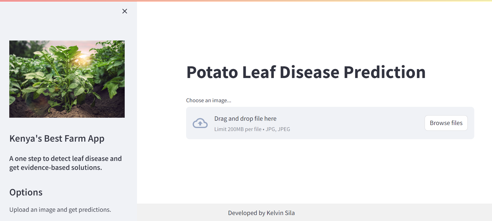
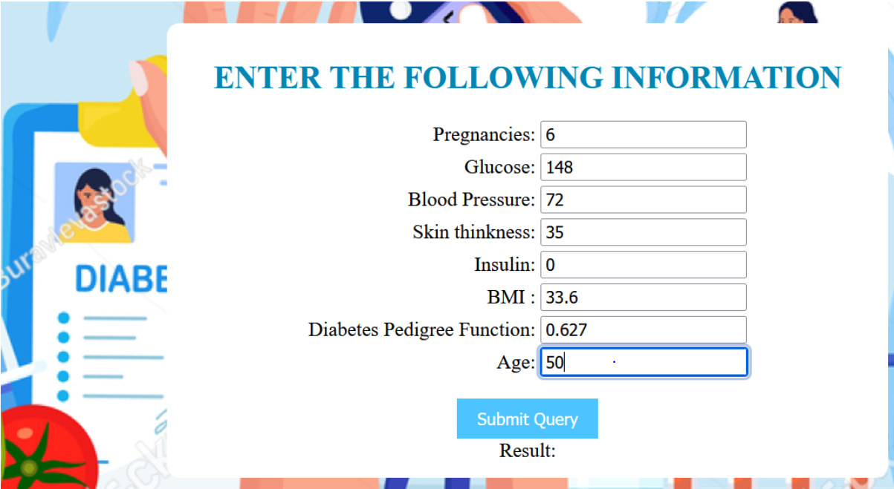
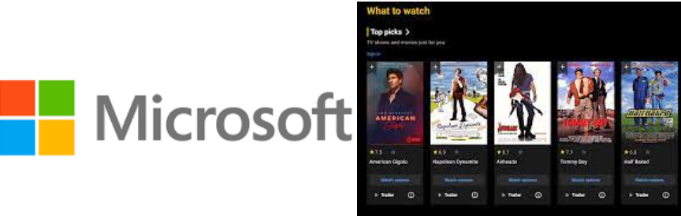

In this project, we created a chatbot for Moringa School's website. We scraped data from all Moringa School sites using API scraper functions and BeautifulSoup. Through the extracted corpus text, we created a JSON file with intents, questions, and responses. I gained skills in natural language processing (NLP), specifically deep learning models such as sequential models used to train the chatbot to generate appropriate responses. We are still improving our model’s performance. Additionally, I developed skills in web scraping, parsing JSON files, and data cleaning for NLP.
Chatbot Website: Tawi-Chatbot.
This series of projects uses power BI to Analyze water crisis in Maji Ndogo, amythical city facing challenges with clean water access; using data on water sources, collections, and related issues, I gained insights into residents' daily lives and water's role. Click the links below for specific projects
In these series of projects, i utilized database from Maji Ndogo and queried data from the database using structured query language (SQL). From the analysis, i sharpened my sql skills such as using statements such as SELECT, FROM, GROUP BY, ORDER BY, WHEREBY, among others.Click the links below for specific projects

In this project, we used Convolutional Neural Networks (CNN) to create a mobile app for diagnosing potato plant diseases through leaf image recognition. The CNN model accurately classified various potato leaf diseases and identified healthy vs. unhealthy leaves. I gained skills in image classification, data preprocessing, TensorFlow, deep learning, and model deployment on Google Cloud.
Mobile App: Advantech's Mobile App.
Presentation: Final Presentation.

The goal of this machine learning project is to develop a diabetes prediction system using logistic regression. This system will help in early identification of individuals who may be at risk of developing diabetes based on certain health-related features. The deployment will be done through a Django web application, providing a user-friendly interface for individuals to input their health data and receive predictions regarding their likelihood of being diabetic.
.
Presentation: Jupyter notebooks.
In this project, I analyzed customer churn risk for Syria Telecommunications using Kaggle data. I employed supervised and unsupervised models, including logistic regression, KNN, decision trees, and XGBoost, and developed skills in accuracy, confusion matrices, and hyperparameter tuning with GridSearchCV.
Project Slides Final Presentation.
In this project, we used supervised machine learning to predict customer likelihood of buying houses in King’s County, Washington DC. We applied linear regression to identify key factors for buying or selling, including living room size, number of bedrooms, bathrooms, and floors. I gained skills in data preparation, feature engineering, data visualization, and linear regression.
Project Slides: Final Presentation.

In this project, I conducted exploratory data analysis to evaluate trends in movie production, release, and profitability since 2015, advising Microsoft on whether to enter the movie industry. The analysis recommended optimal movie genres and release months, adjusted for inflation. The Avengers had the highest return on investment. This project enhanced my skills in data analysis, visualization, and feature engineering.
Project Slides: Final Presentation.